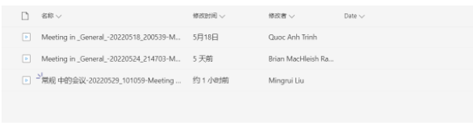

For this assignment, our team has set up and designed a workflow which ensures that all team members are able to contribute to the assignment.
This time we still chose to use Microsoft Teams as the main channel for communication and file sharing. With a working file containing up-to-date information on the group's progress, and different files separating the various parts of the task, team members can effectively view and edit the content of the task with other members in real time.
For meetings, we first use when2meet to determine each member's available time and schedule the meeting time. Members can mark the time they can use for the meeting on the schedule, and then the program will automatically pick the most suitable time slot.

we use Teams to conduct meetings, use the voice call feature to discuss assignments, and record the meetings for future reference. These meetings have been stored in Microsoft Teams' document library, as shown below.

We have also created a GitHub repository, posturing for future assignments in which technological artifacts are to be produced, and hence the ability to quickly push and pull coding segments, documents, or other specific files quickly without disrupting the workflow of the group is highly valued. Our group has also used GitHub to create a website for the assignment report, with a modern and appealing design and user interface, allowing for website visitors to easily traverse the different sections of the report.
As of the time of assignment submission, the GitHub trail has not been utilized as efficiently as possible due to the nature of working in Microsoft Teams.
Meetings
18/5/2 Recording Agenda + Actions
24/5/22 Recording Agenda + Actions
29/5/22 Recording Agenda + Actions
(Could not generate link to file for ‘Agenda + Actions’, instead generated link to tab in MS Teams)